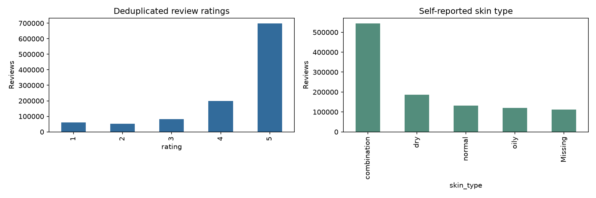

Research proposal for supervisor discussion
Date: 24 October 2026
Status: Dataset integration and exploratory analysis completed; agent implementation and model experiments proposed.
Scope: Historical beauty-market research using existing customer reviews and product metadata, without new human annotation.
Target audience: A beauty brand’s product-marketing or product-development manager.
Intended academic audience: ISMS Marketing Science Conference; fit is provisional, with novelty and empirical results still required.
Beauty merchants preparing a launch must decide which customer needs to investigate, which competing products to compare, what objections to address, and which positioning hypotheses to test. Product listings describe offers, while reviews describe experiences; translating these into a defensible research brief requires repeated filtering, comparison, counting and checking. This proposal investigates whether an agentic AI system can carry out those operations accurately and efficiently.
The available data comprises Amazon All Beauty and Sephora product/review snapshots. EDA reveals complementary strengths: Amazon offers broad product coverage but sparse reviewer histories and incomplete listing fields; Sephora offers denser customer histories, self-reported customer context and existing recommendation labels. These findings motivate a system that actively chooses analyses, verifies numerical claims, inspects conflicting evidence and reports uncertainty rather than simply summarizing positive and negative sentiment.
The proposed artifact is a merchant research copilot for the early research and decision stages of product development and go-to-market preparation. It does not automate formulation, safety testing, manufacturing or market validation. The central marketing question is when customer context and investigation of conflicting evidence change conclusions that aggregate product ratings obscure.
The proposed artifact is a merchant research copilot. Given a bounded category question, it produces a competitor comparison, evidence-backed customer-need observations, contrary evidence and proposed go-to-market tests. The core experiment compares adaptive tool use with a fixed analytical workflow and retrieval-based LLM synthesis under comparable budgets. Evaluation uses programmatic task oracles and existing recommendation outcomes; no new human annotation is required. Claims about actual market demand, strategy quality, staff productivity or sales uplift remain outside the initial evidence.
Business scenario — illustrative, not an observed EDA finding. A merchant is considering a lightweight moisturizer. It asks: “Within this product category, what do reviewers explicitly value, which complaints recur across competitors, and what positioning hypothesis should we test?”
An average product rating cannot answer that question. The analysis must distinguish a frequently discussed issue from a broadly representative need, customer preference from a defect, and absence of a listing attribute from evidence that the attribute is absent in the product. The merchant also needs to know whether a pattern is driven by one popular product, repeated reviewers, missing profiles or the chosen comparison set.
The proposed research therefore follows this chain:
Merchant question → bounded comparison set → computed observations → supporting and contrary reviews → alternative explanations → positioning hypothesis → proposed next test.
An opportunity is a hypothesis, not a measured market size. The system does not estimate willingness to pay or claim that a frequently mentioned complaint represents untapped demand. Its first contribution is making the research process executable and auditable.
All counts below come from the supplied local files and full-file integration scripts, not illustrative examples. Review statistics exclude exact duplicate excess records unless marked raw. Product catalog counts include products without collected reviews.
| Metric | Amazon All Beauty | Sephora |
|---|---|---|
| Catalog products | 112,590 | 8,494 |
| Raw reviews | 701,528 | 1,094,411 |
| Exact duplicate excess reviews | 7,275 | 224 |
| Reviews after exact deduplication | 694,253 | 1,094,187 |
| Products with collected reviews | 112,565 | 2,351 |
| Unique reviewers in deduplicated reviews | 631,986 | 503,216 |
| Reviewers with at least two distinct products | 42,823 | 209,105 |
| Reviewers with at least five distinct products | 1,471 | 40,433 |
| Raw reviews matching their own catalog | 100% | 100% |
| Existing binary recommendation labels | Not provided | 926,314 |
Only 17,704 Amazon products have observed prices (15.72%). Requiring price, description and features retains 4,332 products (3.85%). A complete-case analysis would therefore study a small selected subset. The proposed agent must disclose cohort sizes and missingness, rather than silently excluding most products. The upstream reason for missing fields remains [Unresolved Gap].
In Amazon, 589,163 reviewers (93.22%) have one observed product. Sephora has 209,105 reviewers with at least two products and 40,433 with at least five. This supports Sephora as the primary context-analysis environment. These are reviewed-product histories, not complete purchase records.
Sephora contains 926,314 observed recommendation labels: 778,061 positive and 148,253 negative, approximately 84% positive. A majority-class baseline is essential. Another 167,873 reviews have missing recommendation labels; these will remain missing rather than being inferred from ratings. There are 907,247 reviews with both an observed label and reported skin type.
Among the deduplicated reviews, 412,406 labeled records have a strictly earlier review of another product by the same author. This establishes an eligible pool for retrospective experiments; it is not a final test-set size. Customer profiles are undated snapshots, so historical availability is not established.
Among 14,519 five-star Amazon products, 12,189 (83.95%) have fewer than five catalog ratings. Separately, 4,712 products have at least 20 collected deduplicated reviews, including at least three low ratings (1–2) and three high ratings (4–5). These are candidates for disagreement analysis, not established customer-preference conflicts. Shipping, defects, variants and other factors are rival explanations.
All review rows match a product within their own source. Amazon parent-level matching does not validate variant attributes. No Amazon–Sephora product or customer linkage has been established; experiments will keep the sources separate.
Evidence sources: Amazon integration summary, Amazon evidence ledger, Sephora summary, and Sephora provenance.
Primary RQ1 — research execution. Does adaptive agentic tool use improve the correctness and completeness of verifiable beauty market-research tasks over fixed workflows and retrieval-based synthesis at a matched resource budget?
RQ2 — customer-context value. Do observations using customer context and earlier review evidence improve prediction of later reported recommendations beyond product popularity and customer-history baselines? This is a supporting test of informational value, not validation of a marketing strategy.
RQ3 — computational efficiency and robustness. What accuracy–cost trade-off does adaptive investigation achieve under missing listing fields, sparse histories, inconsistent rating/recommendation outcomes and conflicting review evidence?
Competing explanations:
These alternatives make a null result informative: the study may identify when deterministic automation is sufficient and when adaptive investigation is worth its additional cost.
The system accepts a category, comparison criteria and research question. It returns a research brief with five sections: customer-need observations; competitor comparison; recurring objections and contrary evidence; candidate positioning hypotheses; and proposed validation actions.
Use one controller with specialized tools initially. Separate roles do not require a multi-agent implementation; extra agents will be introduced only if a later experiment justifies them.
A finding record will include claim_type, cohort, numerator, denominator, query_id, source_ids, supporting_quotes, contrary_evidence, limitations, and proposed_test.
Proposed merchant action — illustrative: test whether a texture-focused product-page message improves response within a defined audience. The agent may propose such a test only when the underlying product description supports the message. It will not publish campaigns, change listings, claim treatment efficacy or infer sales revenue from reviews.
Create a frozen suite of 60 task specifications over verified category/cohort fields: 20 development and 40 held-out tasks, with three runs per test task. The pilot may reduce scope if runtime is excessive. Tasks cover cohort construction, recommendation summaries, competitor price comparison, missing-field sensitivity, locating explicitly specified phrases and reconciling contradictory numerical premises. Specifications and answer queries are authored programmatically and checked against the full data; no review receives a new semantic label.
For example: “For products meeting specified category and minimum-review rules, compare observed recommendation proportions across recorded skin types, return the denominators, and state which groups fail the sample-size rule.” SQL yields the independent reference result. Retrieval tasks evaluate known lexical evidence, not whether an unrestricted review interpretation is semantically correct.
Hold out both task templates and category/product cohorts where feasible; keep oracle answers unavailable to agents. This suite measures constrained analytical execution. It does not establish the quality of open-ended market strategy.
Baselines: deterministic SQL/template reporting; retrieval-augmented LLM synthesis with precomputed tables; fixed tool workflow; adaptive tool-using agent. Match underlying model, tool permissions and available data for the LLM comparisons. Report matched-budget performance as well as unconstrained cost curves.
Metrics: exact cohort membership/count accuracy; numerical error at prespecified tolerances; required-field completion; valid source IDs and quote membership; query reproducibility; all-check task success; repeated-run consistency; tokens, tool calls, wall-clock time and monetary API cost. Exclude fabricated figures from success even when prose appears plausible.
Ablate adaptive replanning, the numerical checker and contrary-evidence retrieval individually. The contrary-evidence ablation can measure defined retrieval and factual-task effects; it cannot certify nuanced semantic balance without independent judgments. An LLM judge may be exploratory, never the sole primary evaluator.
Use only observed Sephora is_recommended labels. Freeze a chronological split and treat same-day events as simultaneous. Inputs exclude the target review's text, title, rating, feedback and recommendation. Use strictly earlier histories; the stricter condition excludes target-product history. Audit exact and near-duplicate text across splits and isolate repeated products/families in a separate held-out-product evaluation.
Compare popularity/majority, structured customer/history, text-embedding and LLM-assisted evidence aggregation approaches. Compare no-profile, observed-profile and shuffled-profile conditions. Undated profile fields require a sensitivity analysis and a retrospective-availability caveat. Exclude listing aggregate ratings/review/loves counts; remove other undated listing fields in a stricter sensitivity analysis.
Report macro-F1, balanced accuracy, AUROC, positive-class-defined PR-AUC, log loss, calibration and cost. Lock prompts and thresholds on development data. Use customer-cluster bootstrap confidence intervals; product-cluster sensitivity checks address shared-product dependence. Unreviewed products are not negative outcomes because exposures are unknown.
Amazon supplies a separate rating-outcome robustness analysis, not a pooled replication of Sephora's binary recommendation task. Ratings are ordinal opinions and will be described accordingly.
Automated checks establish mechanical correctness and bounded task performance, not whether every free-text claim is entailed or a market-entry decision is good. Source existence, a quote match and consistent reruns are necessary checks, not semantic ground truth. Novelty, decision usefulness, semantic interpretation quality, willingness to pay and commercial impact remain [Unresolved Gaps] unless separately investigated.
Product: An agentic AI copilot that turns customer experiences and product facts into traceable product-development and go-to-market hypotheses.
Primary demo: A merchant selects a skincare category, a focal product and relevant competitors. The agent investigates recurring needs and objections, checks competing explanations, compares listings and returns an evidence-supported product-page clarification plus a proposed positioning test. Findings link to source records and reproducible cohort calculations. Drafts remain suggestions for merchant review; no campaign or listing is published automatically.
The demo must show the input question, selected cohort and missingness, executed analyses, supporting and contrary evidence, a concrete proposed action, and execution time/cost. Hypothetical examples must be visibly labeled. A claimed product attribute must come from verified product information; customer complaints alone cannot establish an attribute or treatment claim.
| Decision stage | Research output | Possible acceleration | Evidence boundary |
|---|---|---|---|
| Product discovery | Recurring expressed needs and frustrations | Faster problem-brief preparation | Review frequency is not market size |
| Concept development | Competitor strengths, objections and trade-offs | Faster comparison of candidate concepts | No formulation or manufacturing validation |
| Positioning | Audience/context and message hypotheses | Faster preparation of positioning alternatives | No proven willingness to pay or message effectiveness |
| Launch preparation | Proposed page clarification, FAQs and test plan | Faster preparation of launch materials | Product claims require supporting product facts |
| Post-launch learning | Updated customer-experience evidence | Faster issue investigation | No causal attribution from reviews alone |
The immediate problem is disconnected product information and customer experiences. The system connects those two available sources to help merchants serve customers with clearer information and prepare attraction/conversion tests. It does not claim access to transactions, inventory, support or marketing campaign results. Its primary categories are review analysis and proposed catalogue enrichment; it need not implement every idea in the brief.
A useful commercial action is a proposed product-page clarification or audience/message test, rather than a generic sentiment report. Relevant recommendations should vary with the selected product, customer context and evidence. An eventual measurable effect could be lower research cost, shorter preparation time, better service information or improved conversion. None has been demonstrated yet.
Existing-label recommendation prediction is a separate secondary research experiment. Its calculation uses dated held-out outcomes, explicit input exclusions and non-LLM statistical baselines as specified in Section 6. The product demo does not forecast demand, sales or revenue, and the LLM is never the sole forecasting method.
Assume 10 briefs per month, 12 baseline staff hours per brief, 6 assisted hours including all checking and corrections, labor valued at $40/hour, and $15 incremental AI/infrastructure cost per brief:
These assumptions are hypothetical and must not appear in results tables as observations. Released time becomes cash savings only when spending actually falls; otherwise it is capacity that could be redeployed. Do not double-count checking/rework if already included in assisted hours.
A 30–50% reduction in total research effort is a candidate business-pilot target, not an evidence-based estimate, promised effect, automatic research hypothesis threshold or required success result. A quality-preserving improvement must be demonstrated with actual timing. Statistical margins will be fixed after the development pilot and before held-out testing, rather than selected to favor a target.
Net cost saving per brief = (baseline staff hours − assisted staff hours) × labor rate − incremental AI/infrastructure cost − incremental review/rework cost not already counted.
The contribution sought is an explanation of when adaptive investigation of customer differences produces better-supported conclusions than product averages and simpler analysis, with measured resource trade-offs. It is not the existence of an agent interface. Existing customer outcomes test predictive information value, not unmet demand or positioning effectiveness.
If matched-budget fixed workflows perform as well as the agent, or context gains disappear under popularity and leakage controls, the study must narrow or reject the agentic-value claim. A useful negative result would identify tasks where deterministic research automation is sufficient.
The ISMS Marketing Science Conference is a plausible intended audience because its program includes AI and marketing analytics research. This is an audience-fit inference, not an acceptance prediction. Conference presentation is distinct from publication in the journal Marketing Science. A focused literature review and actual empirical results remain prerequisites for a submission claim.
Week 1: finalize category definitions and source/field audits; replicate key EDA counts; specify the task oracles.
Week 2: run a 10-task development pilot comparing fixed tools and adaptive control; freeze the minimal brief schema.
Weeks 3–4: implement bounded controller, data tools, provenance store and checks; freeze development/test tasks and resource budgets.
Weeks 5–6: execute primary comparisons, repeated runs, missingness stress tests and ablations.
Week 7: conduct the existing-label outcome experiment if temporal/snapshot audits permit; otherwise report the feasibility failure.
Week 8: analyze uncertainty and costs; prepare reproducible artifacts, the thesis/paper draft and merchant demonstration.
Minimum resources: existing local datasets and Python environment; parameterized SQL/dataframe tools; local search index; access to one tool-capable LLM for controlled comparisons; versioned prompt/tool schemas and cost logging. Model selection and a monetary budget must be agreed before paid execution. No API runs are part of this proposal deliverable.
Pilot decision rule: advance adaptive control if it shows a reproducible correctness benefit at comparable cost, or a cost benefit at comparable correctness. Before held-out evaluation, define a practically meaningful margin using pilot variance. If fixed tools dominate, narrow the contribution to that finding rather than adding more agents to rescue the hypothesis.
Expected artifacts are a reproducible beauty-research task suite with executable oracles; a controller/tool/provenance architecture; a controlled comparison identifying when adaptation helps; and an existing-label customer-context analysis. These are proposed contributions, not established novelty claims.
Strongest objection: “This is a standard tool-using LLM wrapped around SQL.” The repair is to isolate adaptive control from tool access and budget, and test precisely when it changes measurable outcomes. If it does not, simplify the system.
Measurement objection: “Correct counts do not prove valuable market research.” Agreed: the initial thesis claim is bounded research execution. Semantic strategic value is not established without independent evidence. The output will label positioning suggestions as hypotheses.
Data objection: self-selected reviewers, old snapshots, unknown exposure, changing products, missing fields and undated profiles limit representativeness and temporal claims. No population-demand or causal claim follows from review counts.
Novelty objection: agentic research and beauty personalization already have related work. A focused literature review is still required before claiming a new method or benchmark. Conference suitability depends on actual results and differentiation; it is not guaranteed by the dataset or agent architecture.
Evidence ledger
| Claim | Source | Support and boundary |
|---|---|---|
| Supplied datasets have usable joins and existing outcomes | Local summaries, manifests and integration scripts | Direct for these snapshots; not external data completeness |
| A model can be designed to interleave tool actions and observations | ReAct, primary research paper | Direct methodological precedent; not proof of beauty-market effectiveness |
| Tool agents warrant task-level evaluation | τ-bench, primary benchmark paper | Context for evaluation design; not an oracle for this proposed task suite |
| Agentic market research saves merchant labor | No outcome study in this project | Unsupported as a result; retained as a future business hypothesis |
| This proposal is novel or conference-ready | Focused literature comparison incomplete | [Unresolved Gap]; no claim made |
Supervisor discussion: Is the bounded contribution—adaptive analytical execution for evidence-based beauty market research—an appropriate thesis scope, with existing-label prediction as a supporting experiment and commercial validation reserved for later work?
